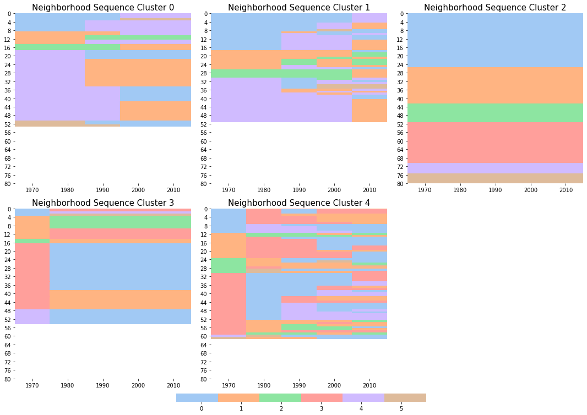

Modeling Neighborhood Dynamics¶
We will use the Columbus MSA as an example to illustrate the dynamics module of geosnap.
Modeling transition rates between neighborhood types across time
Analyzing whole neighborhood sequence
Data preperation¶
Geodemographics for neighborhood segamentation
from geosnap import Community
import matplotlib.pyplot as plt
%matplotlib inline
import seaborn as sns
import sys, os
import warnings
warnings.filterwarnings("ignore")
columbus = Community.from_ltdb(msa_fips='18140')
columbus1 = columbus.cluster(columns=['median_household_income',
'p_poverty_rate',
'p_edu_college_greater',
'p_unemployment_rate'],
method='ward')
columbus1.gdf.head()
| year | geoid | n_asian_under_15 | n_black_under_15 | n_hispanic_under_15 | n_native_under_15 | n_white_under_15 | n_persons_under_18 | n_asian_over_60 | n_black_over_60 | ... | n_total_housing_units_sample | p_nonhisp_white_persons | p_white_over_60 | p_black_over_60 | p_hispanic_over_60 | p_native_over_60 | p_asian_over_60 | p_disabled | geometry | ward | |
|---|---|---|---|---|---|---|---|---|---|---|---|---|---|---|---|---|---|---|---|---|---|
| 0 | 1970 | 39041010100 | NaN | 73.000000 | NaN | NaN | 1238.000000 | 1483.000000 | NaN | 32.000000 | ... | 2001.000000 | NaN | 14.114495 | 0.451213 | NaN | NaN | NaN | 4.244219 | POLYGON ((-83.082292 40.29946, -83.082549 40.3... | 3 |
| 1 | 1970 | 39041010200 | NaN | 5.472672 | NaN | NaN | 1426.479469 | 1599.197822 | NaN | 5.387974 | ... | 1529.132207 | NaN | 12.308566 | 0.120177 | NaN | NaN | NaN | 8.510786 | POLYGON ((-83.071978 40.327509, -83.02909 40.3... | 1 |
| 2 | 1970 | 39041010420 | NaN | 1.505399 | NaN | NaN | 126.788033 | 147.696350 | NaN | 0.167267 | ... | 126.286232 | NaN | 9.413255 | 0.042212 | NaN | NaN | NaN | 3.292529 | POLYGON ((-83.09434499999999 40.328399, -83.09... | 0 |
| 3 | 1970 | 39041010421 | NaN | 1.095593 | NaN | NaN | 92.273573 | 107.490183 | NaN | 0.121733 | ... | 91.908363 | NaN | 9.413270 | 0.042212 | NaN | NaN | NaN | 3.292555 | POLYGON ((-83.126183 40.306402, -83.1249409999... | 0 |
| 4 | 1970 | 39041010422 | NaN | 2.941651 | NaN | NaN | 247.761943 | 288.619354 | NaN | 0.326855 | ... | 246.780934 | NaN | 9.413450 | 0.042211 | NaN | NaN | NaN | 3.292857 | POLYGON ((-83.12404599999999 40.330013, -83.11... | 0 |
5 rows × 195 columns
Estimating the transition rates between neighborhood types¶
Nonspatial transition rates - Classic Markov modeling of transitions¶
m = columbus1.transition(cluster_col="ward")
type(m)
giddy.markov.Markov
m.p
array([[0.79189189, 0.00540541, 0.0027027 , 0.13243243, 0.06216216,
0.00540541],
[0.0203252 , 0.75609756, 0.10569106, 0.11382114, 0. ,
0.00406504],
[0.00917431, 0.20183486, 0.75229358, 0.01834862, 0. ,
0.01834862],
[0.1959799 , 0.18341709, 0.00251256, 0.61809045, 0. ,
0. ],
[0.32307692, 0. , 0. , 0. , 0.66153846,
0.01538462],
[0.09375 , 0.0625 , 0. , 0. , 0. ,
0.84375 ]])
sns.set()
fig, ax = plt.subplots(1,1,figsize = (5,4))
im=sns.heatmap(m.p, annot=True, linewidths=.5, cbar=True, vmin=0, vmax=1,
square=True, xticklabels= m.classes, yticklabels=m.classes, ax=ax)
im.set_title("Empircal transition rates",fontsize=14)
plt.tight_layout()

Spatially conditional transition rates - Spatial Markov modeling of transitions¶
import numpy as np
np.random.seed(5)
sm = columbus1.transition(cluster_col="ward", w_type="queen")
type(sm)
giddy.markov.Spatial_Markov
sm.p
array([[0.79189189, 0.00540541, 0.0027027 , 0.13243243, 0.06216216,
0.00540541],
[0.0203252 , 0.75609756, 0.10569106, 0.11382114, 0. ,
0.00406504],
[0.00917431, 0.20183486, 0.75229358, 0.01834862, 0. ,
0.01834862],
[0.1959799 , 0.18341709, 0.00251256, 0.61809045, 0. ,
0. ],
[0.32307692, 0. , 0. , 0. , 0.66153846,
0.01538462],
[0.09375 , 0.0625 , 0. , 0. , 0. ,
0.84375 ]])
sm.P[0]
array([[0.82413793, 0. , 0. , 0.10689655, 0.06896552,
0. ],
[0.25 , 0.5 , 0.125 , 0.125 , 0. ,
0. ],
[0.5 , 0. , 0.5 , 0. , 0. ,
0. ],
[0.23809524, 0.0952381 , 0. , 0.66666667, 0. ,
0. ],
[0.21621622, 0. , 0. , 0. , 0.75675676,
0.02702703],
[0.16666667, 0. , 0. , 0. , 0. ,
0.83333333]])
sm.P[0]
array([[0.82413793, 0. , 0. , 0.10689655, 0.06896552,
0. ],
[0.25 , 0.5 , 0.125 , 0.125 , 0. ,
0. ],
[0.5 , 0. , 0.5 , 0. , 0. ,
0. ],
[0.23809524, 0.0952381 , 0. , 0.66666667, 0. ,
0. ],
[0.21621622, 0. , 0. , 0. , 0.75675676,
0.02702703],
[0.16666667, 0. , 0. , 0. , 0. ,
0.83333333]])
fig, axes = plt.subplots(3,3,figsize = (13,12))
ls = sm.classes
lags_all = ["Spatial Lag - "+str(l) for l in ls]
for i in range(3):
for j in range(3):
ax = axes[i,j]
if i==0 and j==0:
p_temp = sm.p
sns.heatmap(p_temp, annot=True, linewidths=.5, ax=ax, cbar=True, vmin=0, vmax=1,
square=True, xticklabels= ls, yticklabels=ls)
ax.set_title("Global",fontsize=14)
# Loop over data dimensions and create text annotations.
else:
n = i*3+j-1
if n>=len(sm.classes):
ax.axis('off')
continue
p_temp = sm.P[n]
im=sns.heatmap(p_temp, annot=True, linewidths=.5, ax=ax, cbar=True, vmin=0, vmax=1,
square=True, xticklabels= ls, yticklabels=ls)
ax.set_title(lags_all[n],fontsize=14)
plt.tight_layout()

Whole sequence analysis¶
evaluate the distance/disimilarity between every pair of neighborhood sequences based on a selected sequence method
apply clustering algorithms to obtain a segmentation of neighborhood sequences
(1) Comparing sequences of transitions.¶
transition-oriented optimal matching.
# Use the sequence method to obtain the distance matrix of neighborhood sequences
gdf_new, df_wide, seq_dis_mat = columbus1.sequence(seq_clusters=5,
dist_type="tran",
cluster_col="ward")
seq_dis_mat
array([[0., 5., 1., ..., 3., 3., 5.],
[5., 0., 5., ..., 2., 2., 0.],
[1., 5., 0., ..., 3., 3., 5.],
...,
[3., 2., 3., ..., 0., 0., 2.],
[3., 2., 3., ..., 0., 0., 2.],
[5., 0., 5., ..., 2., 2., 0.]])
df_wide.head()
| year | 1970 | 1980 | 1990 | 2000 | 2010 | tran_5 |
|---|---|---|---|---|---|---|
| geoid | ||||||
| 39041010100 | 3 | 3 | 0 | 2 | 3 | 1 |
| 39041010200 | 1 | 3 | 3 | 3 | 3 | 3 |
| 39041010420 | 0 | 0 | 3 | 0 | 3 | 1 |
| 39041010421 | 0 | 0 | 3 | 3 | 0 | 1 |
| 39041010422 | 0 | 0 | 3 | 3 | 0 | 1 |
df_wide.values[0]
array([3, 3, 0, 2, 3, 1])
from geosnap.visualize import indexplot_seq
indexplot_seq(df_wide, clustering="tran_5", palette="pastel")

(2) Hamming distance¶
gdf_new, df_wide, seq_dis_mat = columbus1.sequence(seq_clusters=8,dist_type="hamming", cluster_col="ward")
seq_dis_mat
array([[0., 3., 4., ..., 4., 4., 3.],
[3., 0., 3., ..., 2., 2., 0.],
[4., 3., 0., ..., 4., 4., 3.],
...,
[4., 2., 4., ..., 0., 0., 2.],
[4., 2., 4., ..., 0., 0., 2.],
[3., 0., 3., ..., 2., 2., 0.]])
indexplot_seq(df_wide, clustering="hamming_8", palette="pastel")

Change the number of clusters
gdf_new, df_wide, seq_dis_mat = columbus1.sequence(seq_clusters=5,dist_type="hamming", cluster_col="ward")
seq_dis_mat
array([[0., 3., 4., ..., 4., 4., 3.],
[3., 0., 3., ..., 2., 2., 0.],
[4., 3., 0., ..., 4., 4., 3.],
...,
[4., 2., 4., ..., 0., 0., 2.],
[4., 2., 4., ..., 0., 0., 2.],
[3., 0., 3., ..., 2., 2., 0.]])
df_wide.values[0]
array([3, 3, 0, 2, 3, 2])
indexplot_seq(df_wide, clustering="hamming_5", palette="pastel")

(3) Arbitrary distance¶
substitution=0.5, indel=1
gdf_new, df_wide, seq_dis_mat = columbus1.sequence(seq_clusters=5,
dist_type="arbitrary", cluster_col="ward")
df_wide.head()
| year | 1970 | 1980 | 1990 | 2000 | 2010 | arbitrary_5 |
|---|---|---|---|---|---|---|
| geoid | ||||||
| 39041010100 | 3 | 3 | 0 | 2 | 3 | 2 |
| 39041010200 | 1 | 3 | 3 | 3 | 3 | 4 |
| 39041010420 | 0 | 0 | 3 | 0 | 3 | 2 |
| 39041010421 | 0 | 0 | 3 | 3 | 0 | 2 |
| 39041010422 | 0 | 0 | 3 | 3 | 0 | 2 |
indexplot_seq(df_wide, clustering="arbitrary_5", palette="pastel")